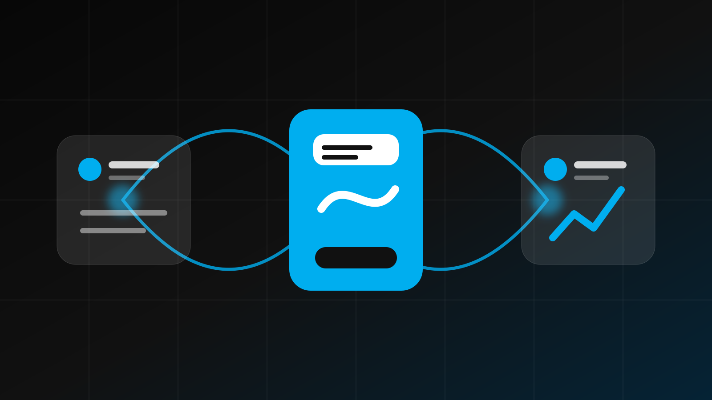

Services / Agency Split Study
Five new directions based on Option 03.
Each concept keeps the bold, campaign-like character you liked while changing the split, rhythm, density, and way the services are explored.
Services Built to Move Business
Strategy.
Creative.
Performance.
A more editorial version of the original: cleaner spacing, a slightly wider statement panel, and a precise two-column capability grid.
Build my growth plan ↗One Senior Digital Partner
Choose the problem.
We connect the disciplines.
This reverse split makes the service rail compact and functional while giving the agency position the larger editorial canvas.
See how the services connect ↗Full-Service Digital Agency
Make the brand clearer.
Make the path easier.
Make the work perform.
Instead of a side-by-side block, this concept stacks the agency statement over a horizontal capability strip—bold, compressed, and campaign-ready.
Start with the opportunity ↗
Web Design & Development
Trust, clarity, and conversion.
↗02 / DiscoverSearch Engine Optimization
Technical, local, and content visibility.
↗03 / CaptureGoogle PPC
Qualified demand with accountable tracking.
↗04 / EngageSocial Media Marketing
Consistent reach and relevance.
↗05 / DefineBrand & Strategy
Positioning people remember.
↗06 / ConvertLocal Lead Generation
Connected pages and campaigns.
↗07 / ExplainContent Marketing
Useful information that earns authority.
↗08 / ProveReputation Management
Evidence that strengthens confidence.
↗